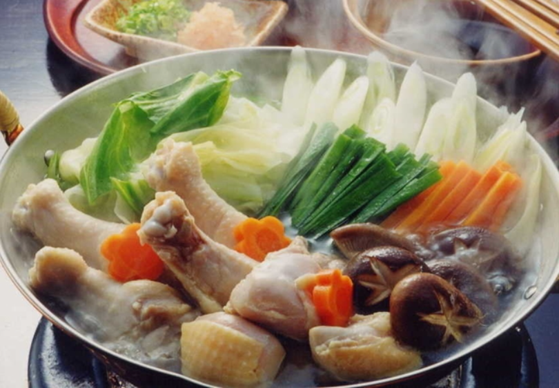
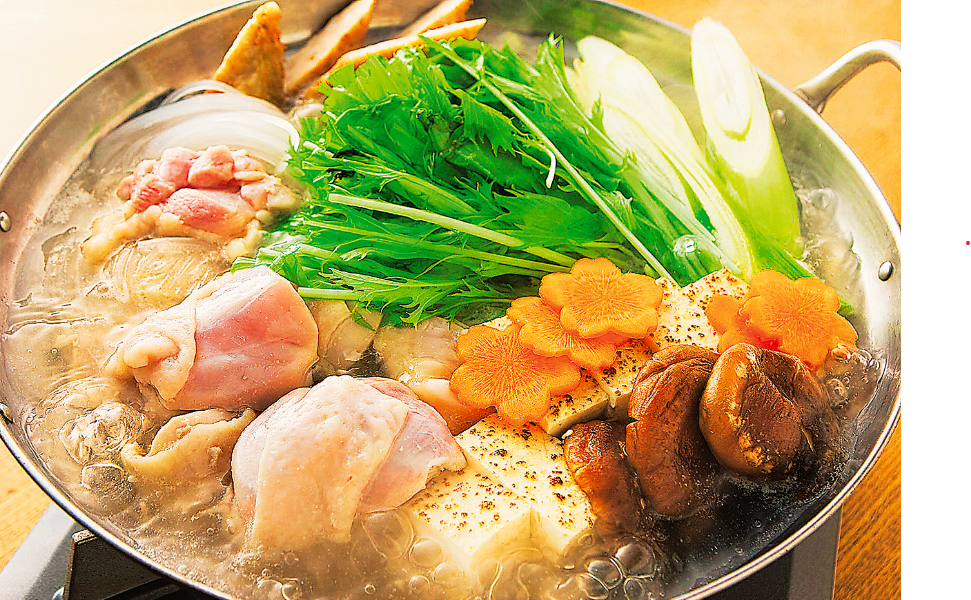

닭고기를 사용한 미즈타키
닭고기를 주 재로 한 일본식 전골 요리다. '미즈타키'라는 이름은 '물에 삶는다'라는 뜻을 가지고 있는데, 원래 물에다가 닭고기를 넣어서 끓이는 요리였기 때문이다.
지금은 미리 닭고기를 장시간 우려서 육수를 만들지만 옛날에는 그냥 물에다가 고기를 넣어서 끓여가면서 먹었다고 한다.
지금도 정통 방식 미즈타키의 육수는 고기와 물, 다시마 정도를 사용하는 단촐한 재료로 우려낸다.
미즈타키 만드는 방법
닭고기와 닭뼈를 주 재료로 한 육수를 사용하며, 처음에는 육수에뼈가 붙은 채로 적당한 크기로 자른 닭고기를 담아서 테이블에서 끓인다.
전골이 끓고 닭고기가 익으면 먼저 닭고기를 건져 먹으며, 그 다음에는 종업원이 양배추를 비롯한 채소와 두부를 비롯한 여러 가지 재료들을 남은 국물에 넣어준다.
마지막에는 국수를 넣거나 죽(조스이)을 만들어 먹을 수 있다.